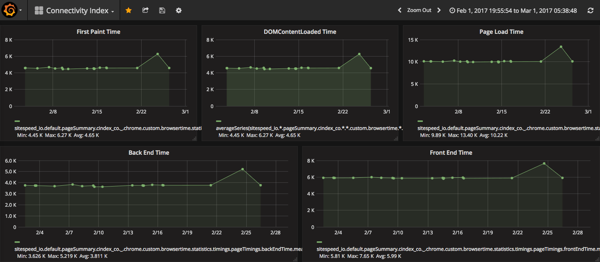

twitter: @malchata — Blog: jeremywagner.me
Slides: bit.ly/speed-vs-speed-to-market
Hi, I'm Jeremy
- I wrote a book for Manning last year on web performance (giveaway at the end of the talk!)
- Hobbies include writing, guitar, running, and high-fiving cartoon dogs
On Hornets and Honeybees
Meet the Asian Giant Hornet
Giant Hornet Stats
Roughly the size of your thumb
.63 cm (.25 in) stinger
Sting can dissolve human tissue
Leaves pheromones to alert other hornets
Top speed of 40 km/h (25 mph)
Giant Hornets Love Honeybees
Giant hornets don't mess around
One giant hornet can kill up to 40 honeybees per minute
30 giant hornets can dispatch a hive of 30,000 honeybees within a half hour
The Honeybee Defense

The hornet scout arrives
The scout is engulfed
(and cooked alive)
Teamwork
Saves the day
Web performance
is hard
Average Total Page Size vs
Average Internet Speed (North America)
Source: httparchive.org, Akamai State of the Internet report
Average Total Page Size vs
Average Internet Speed (North America)
Source: httparchive.org, Akamai State of the Internet report
How big is DOOM?

Installer size:
2.39 MB
How does this happen?
Speed vs Speed to Market
How it all goes down
Timeline set/project greenlit
IA and design created
Development begins
Testing and QA occurs
Site goes to prod
Client finds performance problems
Everyone's unhappy
How do we fix this?
Discuss Performance
Proactively
What's the worst that could happen?
Web Performance is a
User Experience
Problem
Until first paint...

There is no user experience
We've become
Disconnected
From our users
Crucial questions to ask
"Who am I developing for?"
"How fast is the internet for my users?"
"Who am I Developing For?"
Different Users Have
Different Experiences


"How fast is the internet for my users?"
"A survey by Pew Research shows that fully one-third of American adults do not subscribe to any Internet access faster than dial-up at their home at a time when many basic tasks—finding job listings, doing homework, obtaining social services, and even performing many jobs—require being online."— The Unacceptable Persistence of the Digital Divide
Mobile may be slower than you think

Make Data-driven Decisions
Google Analytics
HTTP Archive
Akamai State of the Internet Connectivity Report
cindex.co
Developer Convenience
vs
The User Experience
"Remember it's about user experience, not developer experience. Performance matters!"— Estelle Weyl
CSS Framework Overhead
All Sizes Minified+gzip
JS Library Overhead
All Sizes Minified+gzip
It's not just about file size
Parse time
matters, too!
Ask yourself
Am I over-engineering a solution?
Do I need [JS library] when in-browser methods exist?
Do I even need a CSS framework?
If you insist on a library/framework
Look for smaller API-compatible options (e.g., Zepto, Preact)
Customize if possible (e.g., Bootstrap, Modernizr)
Ensure it adds value for users, not just for you
Ensure your site fails well without it (can you curl it?)
For good measure...
Measure performance!
Performance problems
are invisible
in development
Testing Tips
Use a throttling profile to simulate actual connections
Build throttling profiles based on real data
Test multiple times in a session to build average metrics
Dev Testing (Easy Mode)
Chrome Dev Tools
Dev Testing (Normal Mode)
npm install -g sitespeed.io
sitespeed.io -b chrome -n 25 -d 1 -m 1 -c custom --latency 50 --downstreamKbps 750 --upstreamKbps 250 https://cindex.cositespeed.io
Dev Testing (Hard Mode)
sitespeed.io & Graphite + Grafana
Resource/Navigation Timing APIs
Exposes resource timings in the browser
Available in window.performance
Use the Navigation Timing API for page timings
Use the Resource Timing API for asset timings
Beacon timing data to a server for collection
Browser Support
Navigation Timing API
Resource Timing API
Help!
I'm in prod!
Optimize Images!
Simple bulk image optimization in bash
Optimize JPEGs (jpeg-recompress)
npm install -g jpeg-recompress-bin
find ./ -type f -name '*.jpg' -exec jpeg-recompress {} {} \;Optimize PNGs (optipng)
npm install -g optipng-bin
find ./ -type f -name '*.png' -exec optipng {} \;Optimize SVGs (svgo)
npm install -g svgo
find ./ -type f -name '*.svg' -exec svgo {} \;A Quick Test Case
A Wordpress-powered recipe website with 493 JPEG images (36.5 MB total)
find ./ -type f -name '*.jpg' -exec \
jpeg-recompress \
--min 30 \
--max 70 \
--strip \
--method smallfry \
--loops 12 \
--accurate {} {} \;with jpeg-recompress, image library size was reduced 72% to 10.2 MB in approximately 3 minutes of CPU time
Quality differences were negligible
Unoptimized
182 KB
Optimized
25 KB (-86%)
Image Optimization Works

Use Resource Hints
Use preconnect to open connections to other servers ahead of time:
Link: <https://cdnjs.com>; rel=preconnect; crossorigin<link rel="preconnect" rel="https://cdnjs.com" crossorigin>Give the browser a head start on loading assets with preload:
Link: </css/styles.css>; rel=preload; as=style<link rel="preload" href="/css/styles.css" as="style">Prune your CSS
Go beyond mere minification with cssnano:
npm install -g cssnano-cli
cssnano styles.css styles.optimized.cssFind redundancies with csscss:
gem install csscss
csscss --verbose --no-match-shorthand styles.cssSegment your CSS
Large, monolithic stylesheets are great candidates
Keep one stylesheet with global CSS and place template-specific CSS into separate style sheets
If a specific template is only used on one page, (maybe) considering inlining its CSS
Check Code Coverage
with Chrome Dev Tools

You probably won't fix everything
overnight
Resources
More about Giant Hornets:
a-z-animals.com/animals/asian-giant-hornet
Connectivity Index:
cindex.co
Akamai State of the Internet Reports:
akamai.com/us/en/about/our-thinking/state-of-the-internet-report
More resources
sitespeed.io:
sitespeed.io
Bulk image optimization in bash:
jeremywagner.me/blog/bulk-image-optimization-in-bash
jeremywagner.me/blog/faster-bulk-image-optimization-in-bash
Resource hints specification:
w3c.github.io/resource-hints
Even more resources
Speed vs. Speed to Market (Performance Calendar):
calendar.perfplanet.com/2016/speed-versus-speed-to-market
Talk slides:
bit.ly/speed-vs-speed-to-market
Web Performance in Action:
jeremywagner.me/book